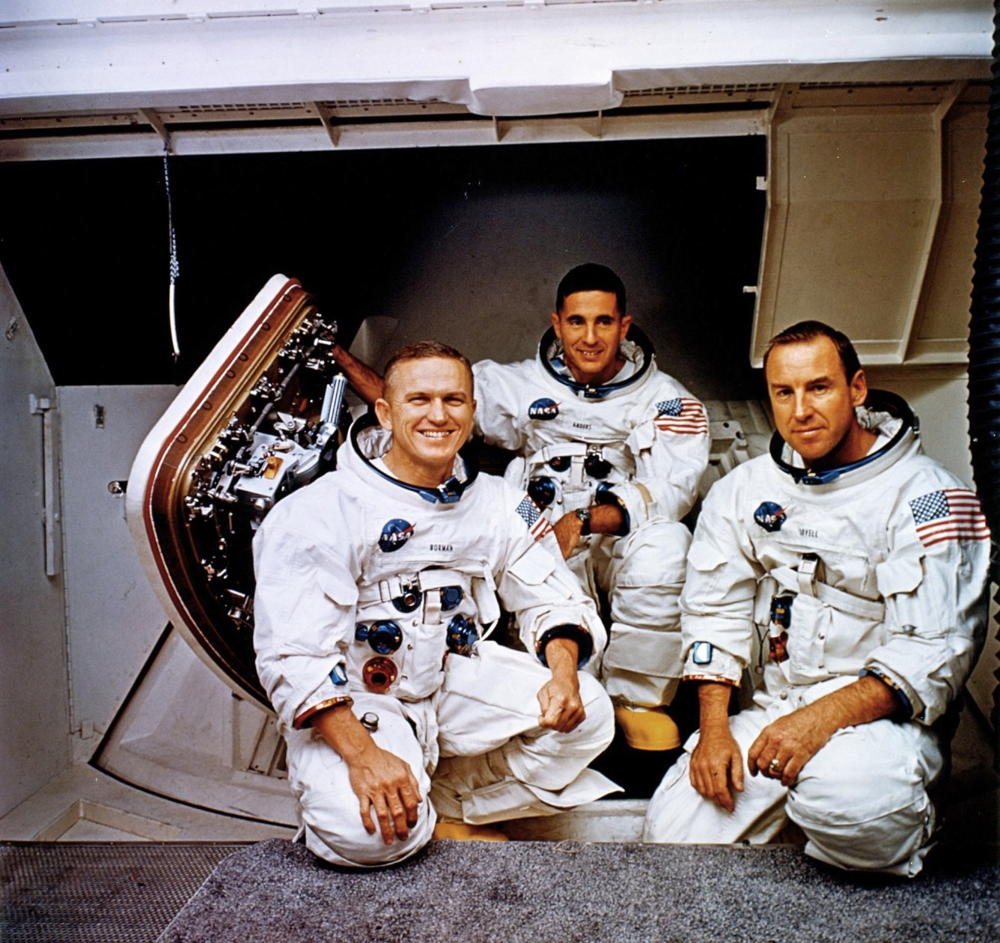

Frank Borman commanded Apollo 8, the first crewed mission to travel to the Moon. Before Apollo 8, he flew on Gemini 7, helping establish records for long-duration spaceflight and demonstrating that humans could safely remain in space for extended periods.
As commander of Apollo 8, Borman led one of the most daring missions in history. His crew became the first humans to leave Earth's orbit, travel to another world, and return safely home. His calm leadership was crucial to the mission's success.
Following his NASA career, Borman became a business executive and served as CEO of Eastern Airlines. His leadership during Apollo 8 secured his place among the most important astronauts of the Space Age.
James Lovell is one of the most accomplished astronauts in NASA history. Before Apollo 8, he flew on Gemini 7, Gemini 12, and served as a member of the backup Apollo crews. During Apollo 8, he helped navigate the first human journey to the Moon and participated in the mission's historic lunar orbits.
Lovell later commanded Apollo 13, where he played a key role in bringing his crew safely home following the mission's famous onboard explosion.
His four spaceflights and leadership during Apollo 13 made him one of the most respected figures in American spaceflight history.
William Anders was an Air Force officer, engineer, and astronaut. During Apollo 8, he was responsible for many of the mission's scientific observations and photography activities.
Anders became famous for taking the "Earthrise" photograph, one of the most influential images ever captured. The photograph showed Earth rising above the Moon's horizon and helped inspire greater public awareness of Earth's fragility and beauty.
After leaving NASA, Anders served in government and business leadership roles. His photograph remains one of the defining images of the twentieth century.